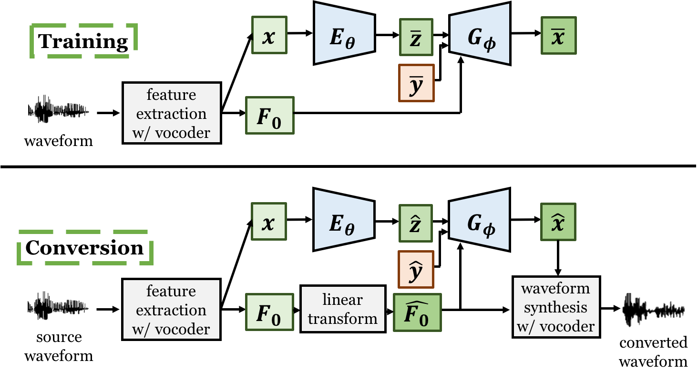

Authors: Wen-Chin Huang, Yi-Chiao Wu, Chen-Chou Lo, Patrick Lumban Tobing, Tomoki Hayashi, Kazuhiro Kobayashi, Tomoki Toda, Yu Tsao, Hsin-Min Wang
Comments: Accepted to Interspeech 2019.
Abstract: In this work, we investigate the effectiveness of two techniques
for improving variational autoencoder (VAE) based voice conversion (VC). First, we
reconsider the relationship between vocoder features extracted using the high quality
vocoders adopted in conventional VC systems, and hypothesize that the spectral
features are in fact F0 dependent. Such hypothesis implies that during the conversion phase,
the latent codes and the converted features in VAE based VC are in fact source F0 dependent.
To this end, we propose to utilize the F0 as an additional input of the decoder.
The model can learn to disentangle the latent code from the F0 and thus generates converted
F0 dependent converted features. Second, to better capture temporal dependencies of the spectral
features and the F0 pattern, we replace the frame wise conversion structure in the original
VAE based VC framework with a fully convolutional network structure.
Our experiments demonstrate that the degree of disentanglement as well as the naturalness of
the converted speech are indeed improved.
Model architecture

Speech Samples
We evaluated our proposed framework on the Voice Conversion Challenge 2018 (VCC 2018) dataset. [Paper][Datasets]